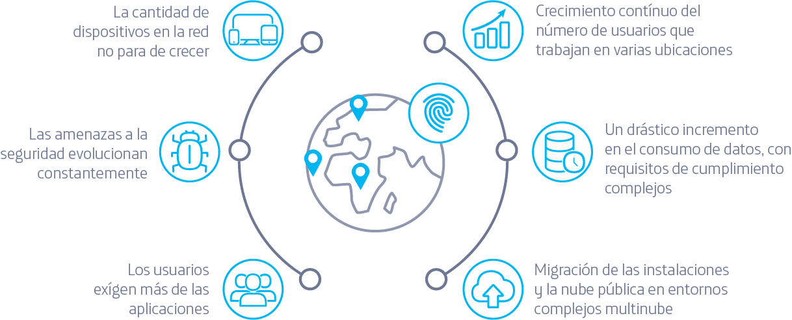

Aumenta la productividad de los usuarios optimizando el rendimiento de las aplicaciones en las instalaciones y en la nube mediante funciones de control, visibilidad y análisis en tiempo real.
Protege a los usuarios, los dispositivos y las aplicaciones con seguridad integrada en la nube y sienta las bases para un perímetro de servicio de acceso seguro con la tecnología de Cisco Umbrella .
Centraliza la administración de la red y la nube para facilitar la implementación de políticas en miles de sitios.
Mejora la flexibilidad con una arquitectura que administre la nube y lo local a fin de que los usuarios estén cómodos en con cualquier aplicación.
La infraestructura de red es más compleja que nunca
A medida que los negocios digitales trasladan las aplicaciones a la nube, los equipos de TI enfrentan el desafío de encontrar una forma más simple de conectar a los usuarios y los dispositivos con las aplicaciones en la nube. Las SD-WAN Seguro de Cisco pueden entregar aplicaciones a los usuarios y los dispositivos en cualquier lugar sin comprometer la visibilidad, la seguridad ni el rendimiento.
Abordan los requisitos normativos de cada industria, incluso los sectores altamente regulados, como los servicios financieros, lo servicios de salud, los servicios públicos y el gobierno.
Monitoreo sofisticado de la estructura de la SD-WAN para detectar problema en tiempo real.
Herramientas de Cloud onRamp para acceder a aplicaciones de software como servicio (SaaS) e infraestructuras de nube publica como servicio (laaS).
Herramientas de Cloud onRamp para acceder a aplicaciones de software como servicio (SaaS) e infraestructuras de nube publica como servicio (laaS).
Te ofrecemos una solución que te permitirá una administración simple y centralizada de la red, mejorar tiempos y automatización de despliegue de sedes y ofrecer un entorno virtual para la integración con aplicaciones y rendimiento para dar los primeros pasos en el proceso de transformación de tus redes empresariales.
Somos proveedores de red y servicio digitales
Soporte local y especializado 24/7
trayectoria y conocimiento operando redes WAN
Pago en monedas nacionales